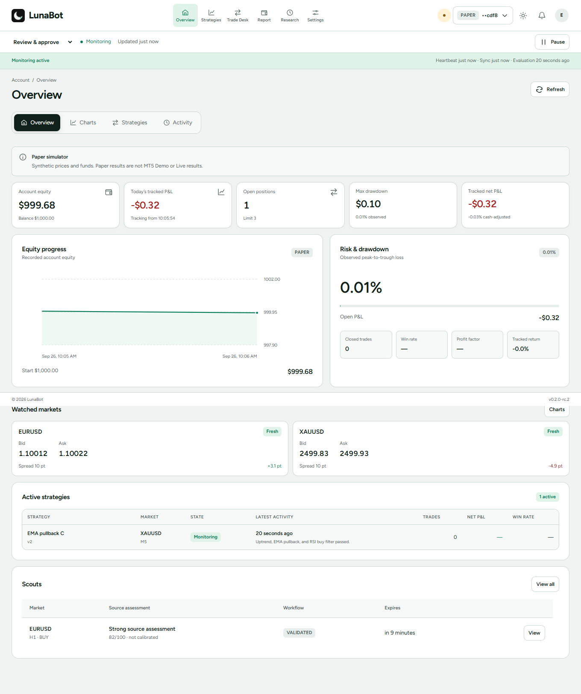
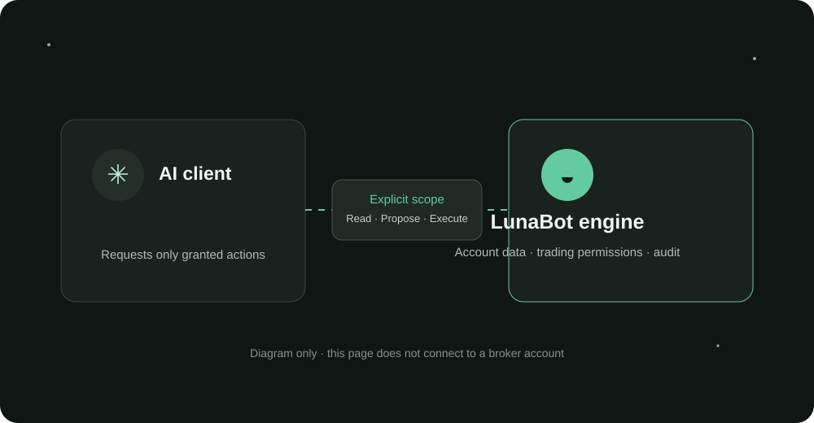

A desktop trading workstation
Make room
for clear thinking.
to the mooon 🌙
See your account, read the market and manage your trading workflow from one thoughtful workspace.
Windows desktop · Local-first engine · Demo setup guidance
Read the complete workstation guide
Designed for the work around a trade
One desk. The full picture.
From the first account check to the final review, LunaBot keeps the important context close and the next action clear.
Inside LunaBot
Explore the workstation.
Choose a view to see its place in the workflow.
01 / Account overview
Know the account before the market moves.
A compact read on equity, exposure, watched markets and strategy activity. Paper values are labelled so simulated records stay distinct from broker data.
Open the workstation guideA clear daily rhythm
Stay with the decisions.
A readable sequence from account context to the record of what happened.
- 01
Check
Confirm account health, current exposure and monitoring state.
- 02
Read
Inspect market prices and closed candles with their freshness visible.
- 03
Prepare
Review order terms, risk and costs before an eligible submission.
- 04
Review
Follow strategy activity, proposals and broker outcomes.
- 05
Learn
Use research and audit records to understand what the system observed.
Your assistant. Your permissions.
Connect intelligence
with clear boundaries.
Compatible MCP clients can request only the accounts and actions you grant. LunaBot still applies its broker, strategy and risk checks.
Read about assistant setup
Illustration only. This website does not connect to your account.
A considered first step
Explore LunaBot in your own time.
A one-calendar-month offline trial starts the first time LunaBot runs on a device. Review the setup guide and product limits before connecting a broker.